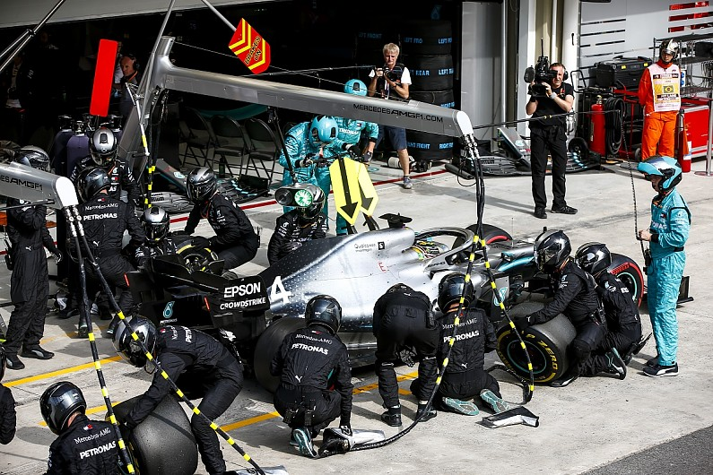
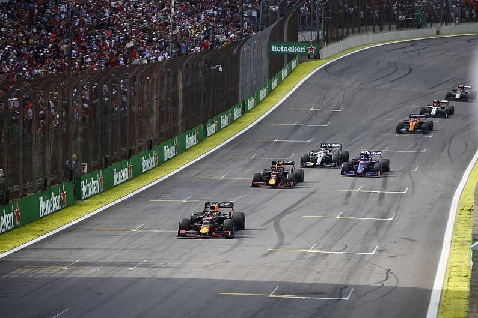
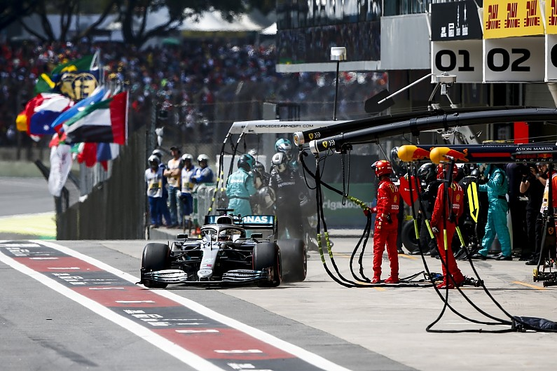
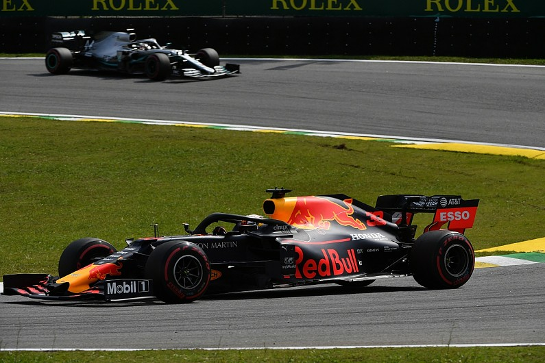

Mercedes F1 team admits Hamilton's extra pitstop was a "dumb" offer
Mercedes Formula 1 team technical director James Allison called giving Lewis Hamilton the opportunity to pit under the final Brazilian Grand Prix safety car "dumb" and a "rookie error".
Allisson also admitted the team was wrong to put the decision in the hands of the driver, especially as Hamilton was given incorrect information about how many places he would lose by stopping. Hamilton was running second behind Max Verstappen in the closing laps of the race when the clash between the Ferraris triggered a safety car. He slowed and was approaching the pit entry when his engineer Pete Bonnington twice repeated the message, "Let us know if you want tyres, you will lose one place". After a pause Hamilton initially said, "'You make the decision," followed by "I'll come in, I'll come in" just as he reached the pit entry. In reality Hamilton lost two places as both Alex Albon and Pierre Gasly got past him, and then when the track finally went green he had only two laps in which to make use of his fresh tyres. Having immediately overtaken Gasly, he made contact with Albon, was consequently repassed by Gasly, and crossed the line in third place. He subsequently received a five-second penalty for the Albon collision, dropping him to seventh.
Allison admitted Mercedes had completely misjudged the situation when it offered Hamilton a pitstop. "Having not had the shiniest of races to that point, we then just did something plain dumb, which was we thought we were exchanging a place for fresh rubber with enough laps left to get that place back properly and then have a go for the lead," said Allison. "That was just factually incorrect because we were exchanging two places - we hadn't factored Gasly - and secondly with the amount of debris on the track, there was just a lot more laps taken up by the safety car than we'd anticipated. "And that was just your rookie error of a not quite quick enough car on the day and trying to stretch too far for victory. "It wasn't on, we just made a mistake." He placed no blame on Hamilton for responding to the offer to pit for fresh tyres. "This was entirely our fault, because we saw what we thought was a fleeting opportunity," said Allison. "It was not at all clear to us that it was the right thing to do. But there was a possibility. "We thought, 'well, let's let's give Lewis a chance to give his view', which we shouldn't have done because we didn't give him the right information. "We said one place and it was two and secondly, we should have just made the call ourselves. So he ummed and ahhed for a second or two before diving in the pits, because he likes racing. But that was our mistake. "From the moment that we made the call it was like a heart sink moment after he emerged from the box behind Gasly and then we just were thinking 'why did we do that?'" Mercedes' race had not gone to plan from the outset, Allison admitted.
The team had managed to jump Verstappen for the effective race lead in the first pitstop sequence but the Red Bull soon repassed Hamilton on track. "We could see that Verstappen was quick," Allison said when asked about the initial strategy by Autosport. "The pace was very strong in the opening stint. And although Lewis was able to stay with him, and even close up a little bit towards the death of that stint, the pace with our car was not really there to to be able to do the sort of domineering or dominating type of race attacks that we've been able to do sometimes this year. "So we pulled the trigger for an undercut the first stint, just theoretically within undercut range. "Lewis had to thrash out a fast lap to make that work. We got lucky with the release of the Williams into Max's path, and we're then in front and we're thinking at that point they probably haven't got the pace to actually breeze past us just as we didn't pass them. "But we actually used most of our energy in the battery, making the undercut work and by the time we went up the hill, we're a sitting duck to Max, who's had good straightline speed all weekend and take our battery away, and you saw what happened." Allison suggested Mercedes was resigned to second place after that, despite trying another undercut at the second stops and Hamilton continuing to chase Verstappen until the late shake-up. "In the second stint Max is actually a little happier on his second set than we were even though it's soft and soft again, he was just able to pull out about a second that hadn't been there before," Allison continued.
"It waxed and waned a bit through the traffic, but we never got within undercut distance again, eventually pulling the trigger just to sort of see what would happen knowing we'd be pretty close to him after the stop. "But already by this point, we were thinking that it was going to be a struggle. We're just up against a very strong car and driver today." At the first safety car, caused by Hamilton's team-mate Valtteri Bottas parking with an engine problem, Mercedes told Hamilton to do the opposite of whatever Verstappen did - meaning he stayed out while the Red Bull pitted. Allison admitted that was simply "because that was a chance to be in the lead" even though it left Hamilton vulnerable to attack from Verstappen. "We would of course have a good strong car behind us on fresh rubber but it wasn't in any way a foregone conclusion that Max will be able to pass," said Allison. In the event, Verstappen immediately passed Hamilton at the restart and Allison said Mercedes expected "a sort of journey home to the flag in those positions from there" before the Ferrari collision set up the final incidents.